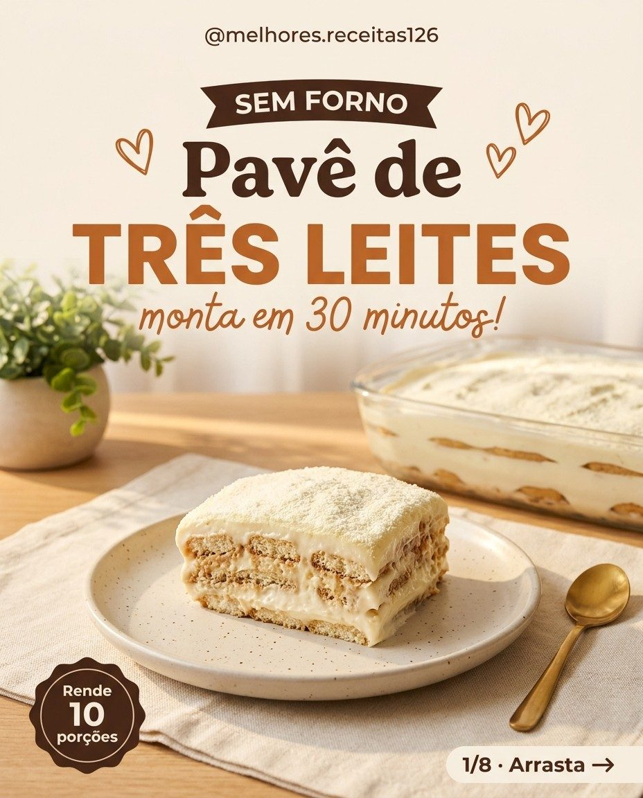
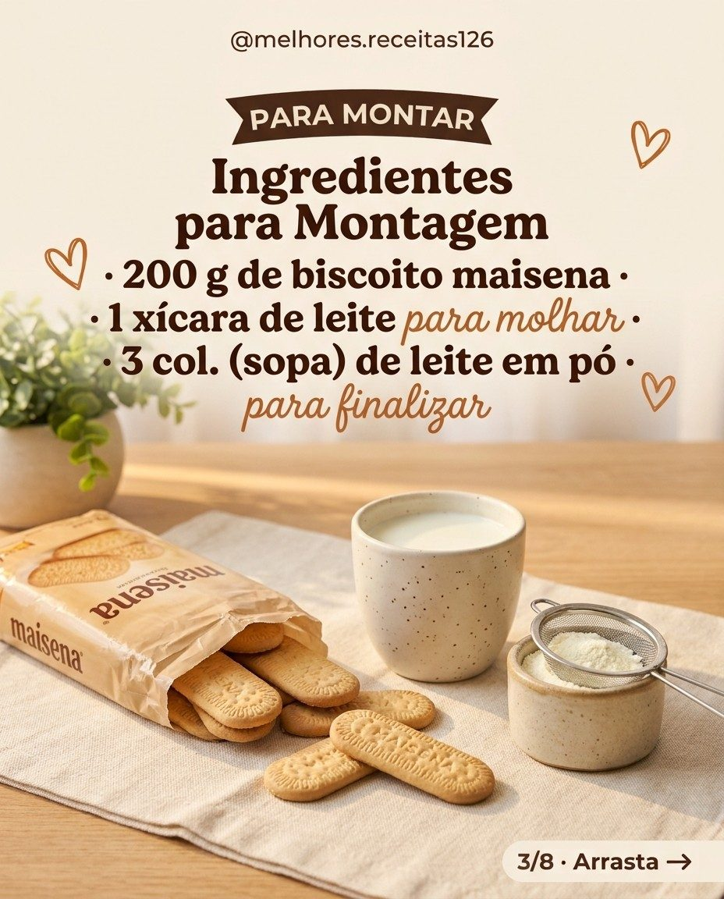
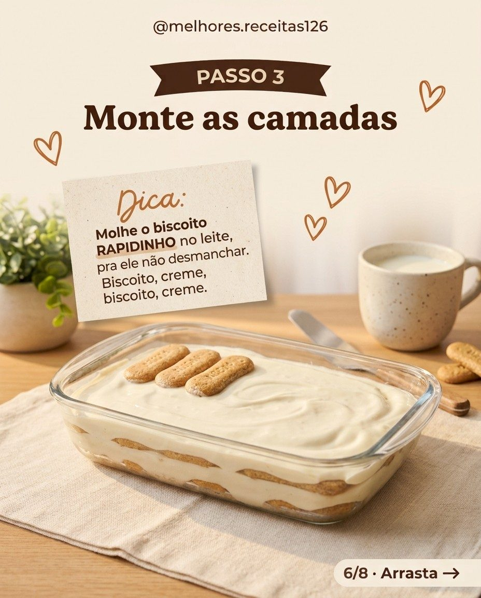
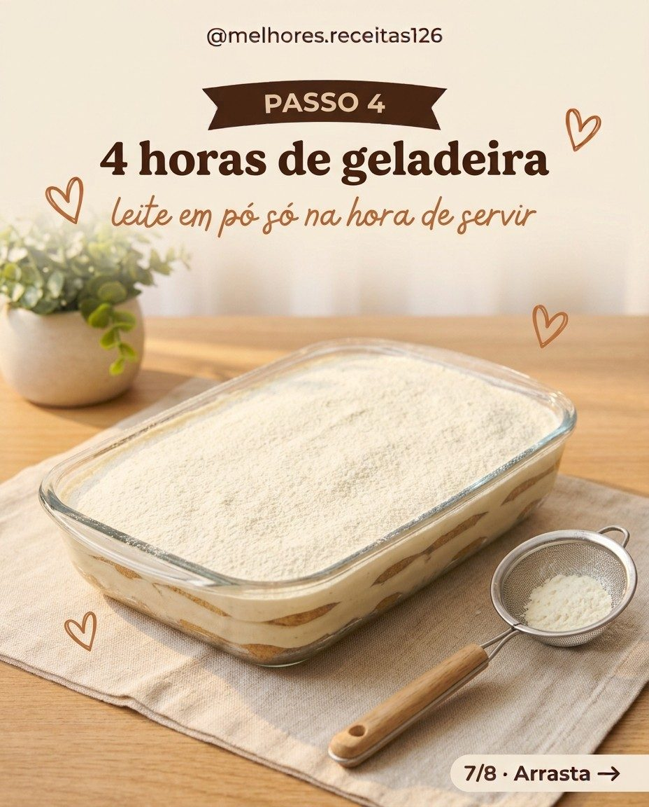
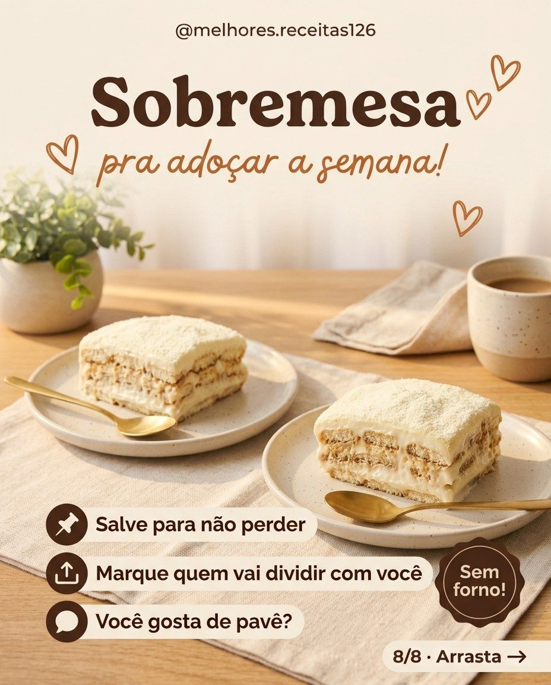

Pavê de três leites sem forno
Pavê de três leites sem forno: creme de leite condensado, leite e creme de leite em camadas com biscoito maisena, finalizado com leite em pó. Fácil, cremoso e rende 10 porções.

10 porções · travessa de 20 x 30 cm · toque para marcar o que já separou
O pavê de três leites é aquela sobremesa que agrada todo mundo e não precisa de forno. O creme leva leite condensado, leite e creme de leite, e por cima vai leite em pó peneirado na hora de servir. O segredo está em molhar o biscoito bem rapidinho no leite: assim ele fica macio sem desmanchar, e as camadas ficam bonitas no corte. Dá para montar na véspera, o que faz dele uma ótima opção para almoço de domingo e festas de fim de ano.
Modo de preparo- Em uma panela, misture o leite condensado, o leite, as gemas e o amido. Leve ao fogo médio mexendo sem parar até engrossar (cerca de 10 minutos).
- Desligue o fogo, junte o creme de leite e misture. Deixe amornar.
- Passe os biscoitos rapidamente no leite e forre o fundo da travessa.
- Cubra com metade do creme. Repita: biscoitos e o restante do creme.
- Leve à geladeira por pelo menos 4 horas. Na hora de servir, peneire o leite em pó por cima.




Publicada em 14 de novembro de 2026 · Tempo total: 4 h 40 min · Imagem ilustrativa criada com IA.
Conta pra gente como ficou! Deixe um comentário, mande uma foto do seu resultado ou marque @melhores.receitas126 no seu post.